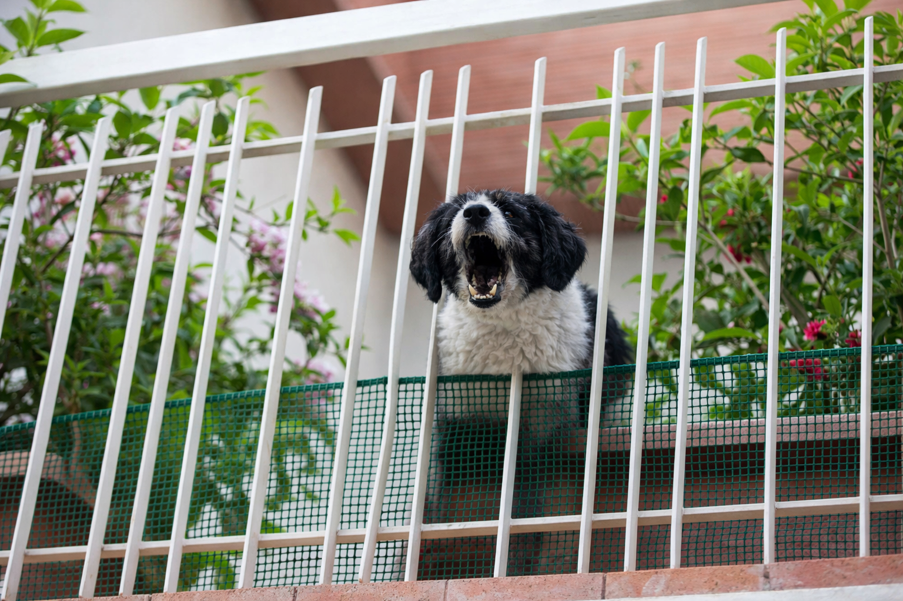
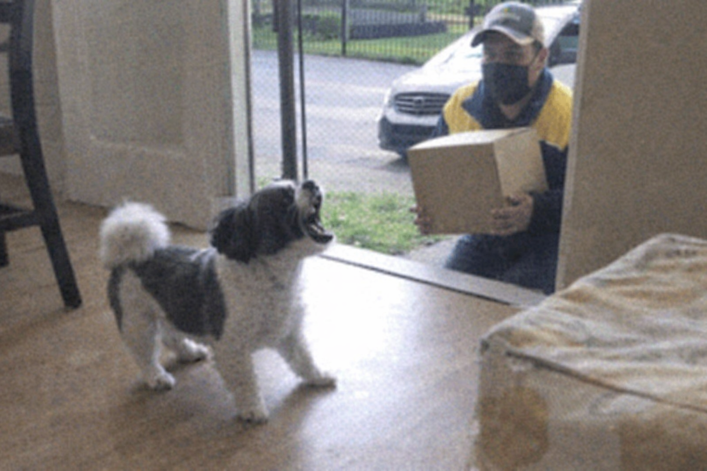
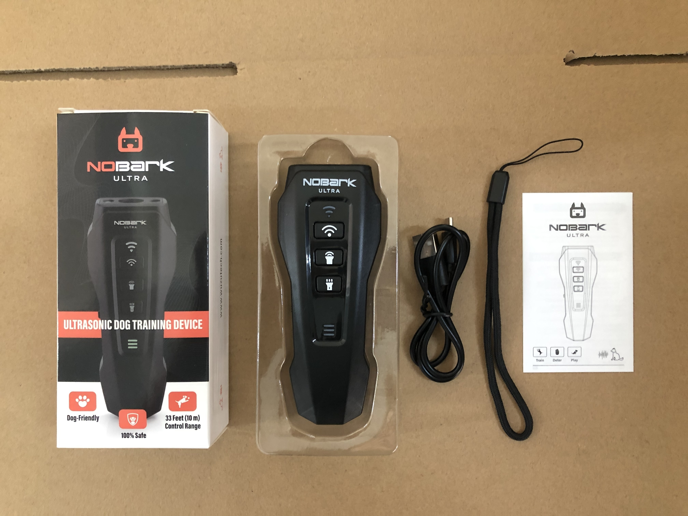
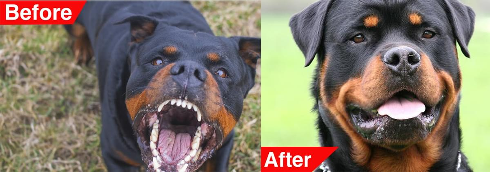
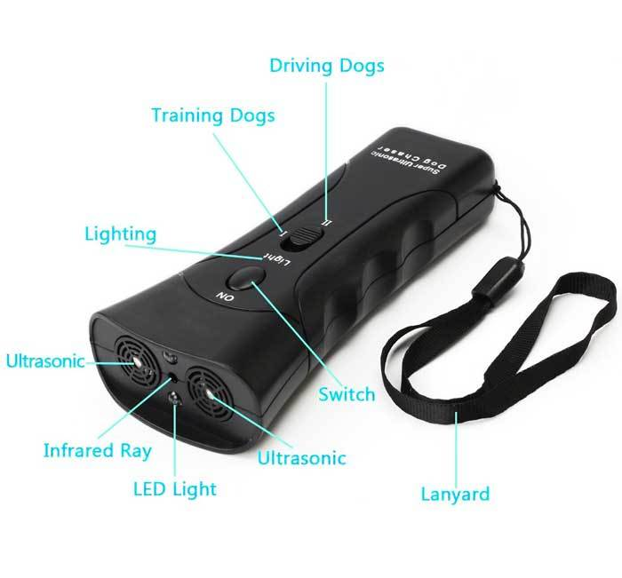
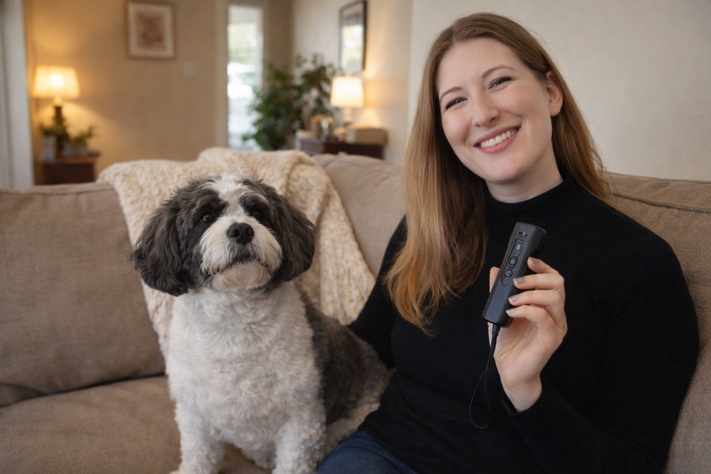

Dog Barking Driving You Crazy? I Tried This NoBark Device — Here’s My Honest Review

A simple handheld dog training device that is getting attention from owners who want a more humane alternative
More dog owners are switching to handheld bark-control devices instead of yelling or shock collars
No shock collar required
Press when barking starts
Works at home or outside
If your dog barks nonstop at the door, window, fence, or every little sound — you’re not alone.
And if you’ve already tried treats, verbal correction, clapping, or random training tips online… you probably know how exhausting it gets.
The hardest part is that barking can go from “a small issue” to something that changes the whole mood of your home.
It usually starts like this:
The doorbell rings. Barking.
A neighbor walks by the window. Barking.
A delivery driver shows up. More barking.
After a while, it stops being a small annoyance — and starts affecting your stress, your patience, and even your sleep.

For many owners, barking at doors, windows, and outside movement becomes an everyday source of tension
You get tense whenever someone comes to the door.
You worry about what the neighbors think.
You feel embarrassed when guests are over.
And even though you love your dog, you start feeling worn down by the constant noise.
That was the main reason I got curious about NoBark Ultra. I wanted something that felt more humane, more practical, and easier to use in real life.
This may be worth a look if:
- Your dog barks at the door, windows, guests, delivery drivers, or outside movement
- You want something gentler than a shock collar
- You need a device you can actually keep nearby and use fast
- You’re tired of feeling stressed every time barking starts
Why I Decided To Try It
What first caught my attention was how many owners described it as a simple handheld device that helps interrupt barking without yelling or using shock correction.
That instantly made it feel different from most of the options I had seen before.
I’m not interested in making life harder for my dog.
I’m interested in a calmer home.
So the idea of using a compact device designed to quickly get a dog’s attention in the moment sounded much more realistic to me.
When mine arrived, the first thing I noticed was how small and simple it was. No complicated setup, no intimidating instructions, no bulky equipment.

When my NoBark Ultra arrived, the first thing I noticed was how compact the device was. It felt simple and easy to start using right away.
Just a small handheld device with one clear purpose.
That alone made me more likely to actually use it consistently.
What Happened When I Tried It

NoBark Ultra is a compact handheld device meant to interrupt barking when it starts
I did not have to wait very long.
As usual, the next barking trigger showed up quickly.
I had the device nearby, pressed the button, and immediately got a reaction.
That was the moment I understood why people were talking about it.
The biggest difference was not that it felt dramatic — it was that it felt immediate.
Instead of me reacting emotionally, raising my voice, or repeating commands over and over, I had something quick and simple that helped interrupt the moment.
That alone changed how I felt about handling barking inside the house.
I also liked that it felt easy to keep nearby. By the front door, in the living room, on walks, or even outside — it fit naturally into normal life.
After trying NoBark Ultra myself, I understood why so many dog owners were talking about it
One of my favorite things is that it feels practical enough for real everyday use
Why I Think It Works So Well For So Many Owners
After using it myself, I can see why this kind of product spreads so quickly.
Why NoBark Ultra stood out to me:
- It feels much more humane than shock-based options
- It is simple enough to use the second barking starts
- It is small and portable for both indoor and outdoor use
- It does not require a complicated learning curve
- It fits the most common trigger moments: doors, guests, windows, walks, and backyard barking
- It feels practical for busy owners who want something they will actually use
I think that matters because most dog owners are not looking for another overwhelming routine.
They want relief.
They want peace.
They want something that feels easy enough to use consistently.
And to me, that is exactly where NoBark Ultra feels strongest.
Here’s How It Works

Many owners are looking for a simple way to interrupt barking before it escalates
NoBark Ultra is designed to help interrupt barking the moment it starts.
The basic idea is simple: when your dog begins barking or reacting to a trigger, you press the button and the device emits a high-frequency ultrasonic sound intended to quickly get your dog’s attention.
It is not meant to harm the dog. The goal is to interrupt the barking moment so your dog can refocus and calm down.
What I personally like about this approach is that it feels much easier and more practical than yelling across the room or using a harsher correction method.

The small handheld design makes it easy to keep nearby and use right when barking starts
Simple 3-Step Use:
- Wait for the barking or unwanted behavior to begin
- Press the button to interrupt the moment
- Redirect your dog calmly and repeat consistently during common triggers
What I Liked Most
This was a big one for me. I did not want a harsh bark solution, and this felt like a much gentler direction.
No major setup, no confusing system, no big learning curve. That makes a huge difference when you are already frustrated.
I can understand why people keep it by the door, in the living room, or use it outside. It is easy enough to make part of your normal routine.
That may sound simple, but it matters. A product only helps if you actually use it. This one feels easy enough to grab the moment barking starts.
If your dog barks nonstop and you have been looking for something practical, humane, and easy to use, I genuinely think NoBark Ultra is worth checking out.
Who I’d Recommend It To
I think this is especially worth a look if your dog tends to bark at:
• knocks at the door
• guests entering the house
• people or dogs outside
• delivery drivers or cars
• movement near windows or the backyard
It also makes sense for owners who have already tried the usual tricks and want something that feels easier than endless correction, but gentler than a shock collar.
This kind of device makes the most sense in the everyday moments where barking usually starts
Final Verdict: I’d Recommend Giving It A Try

A calmer, quieter home is what most dog owners are really looking for
No product is magic, and I always prefer to be honest about that.
But after looking into this and trying it for myself, I understand why NoBark Ultra has been getting so much attention.
It is simple.
It feels humane.
It is easy to use.
And most importantly, it feels like a realistic tool for one of the most frustrating daily problems dog owners deal with.
If barking has been stressing you out, this is one of the few products I have looked at that feels both practical and worth recommending.
That is why I decided it was worth sharing here on Rhonda Finds.
SEE ALSO: Check availability for NoBark Ultra here » CHECK NOBARK ULTRA AVAILABILITY >>
Comments
This is exactly what I have been looking for. I do not want to use a shock collar, but I need something for the door barking.
I like that this review actually sounds honest. The biggest issue for us is fence barking, so I may try this.
Portable and humane is what sold me. My dog is sweet but way too reactive when people come to the house.
I appreciate that this feels like a real recommendation instead of just another hard sell. Going to check it out.
I honestly felt embarrassed every time someone came to my door because my dog would go crazy. This made me curious enough to try it.